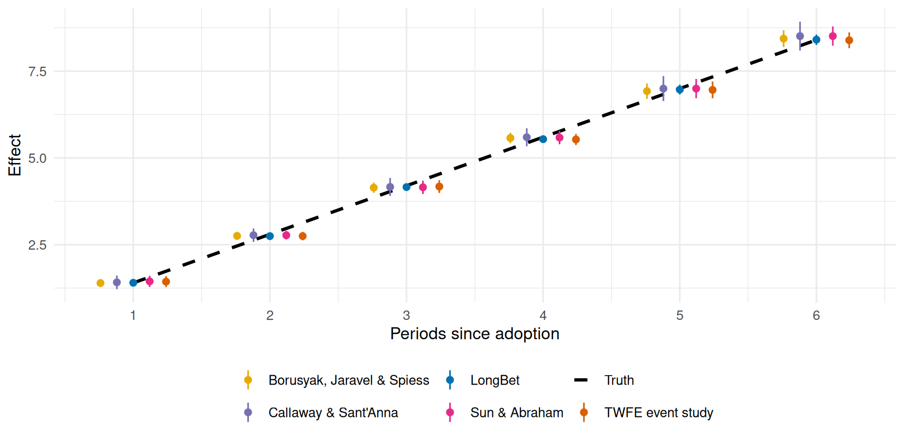
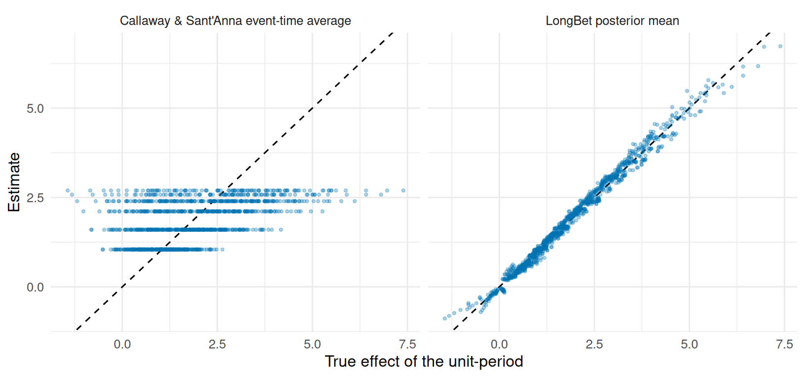

library(longbet)
library(dplyr)
library(tidyr)
library(tibble)
library(ggplot2)
library(purrr)
library(knitr)
library(did)
library(fixest)
library(didimputation)
library(bacondecomp)
source("R/longbet-common.R")
source("R/longbet-sim.R")
source("R/longbet-artifacts.R")
verify_longbet_environment()
theme_set(theme_minimal(base_size = 12))
DID_PAL <- c(Truth = "#000000", `TWFE event study` = "#d95f02",
`Callaway & Sant'Anna` = "#7570b3", `Sun & Abraham` = "#e7298a",
`Borusyak, Jaravel & Spiess` = "#e6ab02", LongBet = "#0072B2")27 LongBet and Modern Difference-in-Differences
NotePart of the LongBet sequence
This chapter sits between LongBet: From Effects to Decisions and LongBet: Forecasting and Observational Panels. It is self-contained: the panels here are new, small, and built to isolate one question at a time.
27.1 The Question a Reviewer Will Ask
Present a panel model of a staggered rollout and someone will ask why you did not run the estimator from the econometrics literature. It is a fair question with a precise answer, and this chapter gives it by running both on the same data.
The modern staggered difference-in-differences toolkit exists because the canonical two-way fixed effects (TWFE) event study breaks under staggered adoption. Goodman-Bacon (2021) showed that its coefficient is a weighted average of all the two-by-two comparisons available in the panel, including forbidden ones that use already-treated units as controls for later-treated units. When effects grow with exposure, those comparisons subtract a rising treated trend and can flip the sign of the answer. The repairs are well known: Callaway and Sant’Anna (2021) estimate group-time effects against never-treated or not-yet-treated units and aggregate afterwards; Sun and Abraham (2021) build an interaction-weighted event study; and Borusyak et al. (2024) impute untreated potential outcomes from a model fitted on untreated cells only.
Those estimators are excellent at what they do. This chapter’s claim is narrow and, I think, useful: on a panel they were built for, LongBet matches them, and on a panel where the effect varies across units, it answers a question they are not built to answer.
# One long-format panel per simulation, in the shape the econometric packages expect.
panel_long <- function(sim) {
n <- nrow(sim$y)
df <- expand.grid(id = seq_len(n), time = sim$tg)
df <- df[order(df$id, df$time), ]
df$y <- as.vector(t(sim$y))
df$treat <- as.vector(t(sim$z))
df$first_treat <- sim$adopt[df$id]
df$first_treat_did <- ifelse(is.finite(df$first_treat), df$first_treat, 0)
df$rel_time <- ifelse(df$first_treat_did == 0, -1000, df$time - df$first_treat)
for (j in seq_len(ncol(sim$x))) df[[colnames(sim$x)[j]]] <- sim$x[df$id, j]
df
}
# Each estimator's event-study curve, aligned on exposure S = event time + 1 so that every
# method is reporting the same quantity on the same axis.
did_event_curves <- function(df, max_s) {
align <- function(event_time, est, lo, hi) {
m <- match(seq_len(max_s) - 1, event_time)
tibble(s = seq_len(max_s), estimate = est[m], lower = lo[m], upper = hi[m])
}
tw <- feols(y ~ i(rel_time, ref = c(-1, -1000)) | id + time, data = df)
tw_ct <- as.data.frame(summary(tw)$coeftable)
tw_ev <- suppressWarnings(as.numeric(sub(".*::", "", rownames(tw_ct))))
cs <- aggte(att_gt(yname = "y", tname = "time", idname = "id", gname = "first_treat_did",
data = df, control_group = "notyettreated", allow_unbalanced_panel = FALSE),
type = "dynamic", na.rm = TRUE)
cs_crit <- if (!is.null(cs$crit.val.egt) && is.finite(cs$crit.val.egt)) cs$crit.val.egt else 1.96
sa <- feols(y ~ sunab(first_treat_did, time) | id + time, data = df)
sa_ct <- as.data.frame(summary(sa)$coeftable)
sa_ev <- suppressWarnings(as.numeric(sub(".*::", "", rownames(sa_ct))))
bjs <- as.data.frame(did_imputation(data = df, yname = "y", gname = "first_treat_did",
tname = "time", idname = "id", horizon = TRUE, pretrends = FALSE))
bjs_ev <- suppressWarnings(as.numeric(as.character(bjs$term)))
bind_rows(
align(tw_ev, tw_ct$Estimate, tw_ct$Estimate - 1.96 * tw_ct$`Std. Error`,
tw_ct$Estimate + 1.96 * tw_ct$`Std. Error`) %>% mutate(estimator = "TWFE event study"),
align(cs$egt, cs$att.egt, cs$att.egt - cs_crit * cs$se.egt,
cs$att.egt + cs_crit * cs$se.egt) %>% mutate(estimator = "Callaway & Sant'Anna"),
align(sa_ev, sa_ct$Estimate, sa_ct$Estimate - 1.96 * sa_ct$`Std. Error`,
sa_ct$Estimate + 1.96 * sa_ct$`Std. Error`) %>% mutate(estimator = "Sun & Abraham"),
align(bjs_ev, bjs$estimate, bjs$conf.low, bjs$conf.high) %>%
mutate(estimator = "Borusyak, Jaravel & Spiess"))
}27.2 Their Home Turf: an Additive Panel
Three hundred units over eight periods. Unit effects are additive, adoption is randomized across periods 3, 5 and 7 or never, four covariates do nothing at all, and the effect grows linearly with exposure and is identical for every unit: \(\tau(S) = 1.4\,S\). Nothing here needs a forest. The question is whether the forest costs anything when flexibility is not needed.
ad <- simulate_additive()
ad_long <- panel_long(ad)
ad_max_s <- max(ad$s[ad$z == 1])
ad_truth <- vapply(seq_len(ad_max_s), function(ss) mean(ad$tau[ad$s == ss]), numeric(1))
ad_run <- lb_artifact(
"additive_fit",
lb_key("additive", lb_budget(4), LB_MODEL, digest::digest(ad[c("y", "x", "z")])),
export = "ad",
builder = function() {
f <- do.call(longbet::longbet, c(list(y = ad$y, x = ad$x, z = ad$z, t = ad$tg, random_seed = 101L),
LB_MODEL, lb_budget(4)))
p <- predict(f, x = ad$x, z = ad$z, t = ad$tg, summary_only = TRUE, random_seed = 1)
list(att = get_att(p, alpha = 0.05),
layout = chain_layout(f$model_params$num_chains, f$model_params$num_sweeps))
})
ad_curves <- bind_rows(
did_event_curves(ad_long, ad_max_s),
tibble(s = seq_len(ad_max_s), estimate = ad_run$att$att[seq_len(ad_max_s)],
lower = ad_run$att$intervals[1, seq_len(ad_max_s)],
upper = ad_run$att$intervals[2, seq_len(ad_max_s)], estimator = "LongBet"))
kable(diagnose_draws(ad_run$att$att_full, ad_run$layout, "Average effect, every exposure")$summary %>%
select(-ok), digits = 3, caption = "Sampling checks for the LongBet fit on the additive panel.")| Quantity | R-hat (max) | Bulk ESS (min) | Tail ESS (min) | Passed |
|---|---|---|---|---|
| Average effect, every exposure | 1.003 | 3481.472 | 3478.142 | 6 of 6 |
ggplot(ad_curves, aes(s, estimate, colour = estimator)) +
geom_line(data = tibble(s = seq_len(ad_max_s), estimate = ad_truth, estimator = "Truth"),
linewidth = 1.1, linetype = "dashed") +
geom_pointrange(aes(ymin = lower, ymax = upper), position = position_dodge(0.6), size = 0.3) +
scale_colour_manual(values = DID_PAL) +
scale_x_continuous(breaks = seq_len(ad_max_s)) +
labs(x = "Periods since adoption", y = "Effect", colour = NULL) +
theme(legend.position = "bottom")
ad_curves %>% group_by(Estimator = estimator) %>%
summarise(RMSE = sqrt(mean((estimate - ad_truth)^2)), `Mean error` = mean(estimate - ad_truth),
`Interval width` = mean(upper - lower),
`Contained truth` = sprintf("%d of %d", sum(ad_truth >= lower & ad_truth <= upper), n()),
.groups = "drop") %>%
arrange(RMSE) %>%
kable(digits = 3, caption = sprintf("Accuracy over the %d observed event times on one dataset. Containment counts are not coverage.", ad_max_s))| Estimator | RMSE | Mean error | Interval width | Contained truth |
|---|---|---|---|---|
| LongBet | 0.038 | -0.029 | 0.219 | 6 of 6 |
| TWFE event study | 0.043 | -0.027 | 0.363 | 6 of 6 |
| Borusyak, Jaravel & Spiess | 0.047 | -0.029 | 0.331 | 6 of 6 |
| Callaway & Sant’Anna | 0.049 | 0.010 | 0.560 | 6 of 6 |
| Sun & Abraham | 0.054 | 0.011 | 0.409 | 6 of 6 |
LongBet was not told that the world was additive, that the effect was homogeneous, or that the trajectory was linear, and it lands with the estimators built for exactly this case. That is the reassurance worth having before using a flexible model where the classical one cannot go: flexibility is not costing you anything here.
Why the canonical estimator needs repairing
The TWFE event study above is well behaved because it includes never-treated units and leads and lags. The single-coefficient TWFE regression that many teams still run is not. The Goodman-Bacon decomposition shows exactly why.
invisible(capture.output(ad_bacon <- bacon(y ~ treat, data = ad_long, id_var = "id", time_var = "time")))
ad_bacon %>% group_by(type) %>%
summarise(Weight = sum(weight), `Weighted average estimate` = sum(estimate * weight) / sum(weight),
.groups = "drop") %>%
rename(`Comparison type` = type) %>%
kable(digits = 3, caption = "Goodman-Bacon decomposition of the static two-way fixed effects coefficient on this panel.")| Comparison type | Weight | Weighted average estimate |
|---|---|---|
| Earlier vs Later Treated | 0.259 | 2.604 |
| Later vs Earlier Treated | 0.270 | -1.171 |
| Treated vs Untreated | 0.470 | 3.504 |
The “later versus earlier treated” row is the forbidden comparison: it uses units that are already treated, and whose effects are still growing, as the control group. With a dynamic effect its two-by-two estimate is negative even though every unit’s effect is positive, and it carries a quarter of the total weight. That is the pathology the modern estimators remove, and it is why a single TWFE coefficient is not a safe default for a staggered rollout.
27.3 Where the Cell Estimators Cannot Go
Now a second panel with the same staggered design: 400 units, a trajectory that is concave rather than linear, and a size of the effect that varies smoothly with a covariate:
\[ \tau(x, S) = (1.5 + 0.9\,x_1)\,\log(1 + S). \]
Every estimator in this chapter can still recover the average. The difference appears below the average.
hd <- simulate_heterogeneous()
hd_long <- panel_long(hd)
hd_max_s <- max(hd$s[hd$z == 1])
hd_truth <- vapply(seq_len(hd_max_s), function(ss) mean(hd$tau[hd$s == ss]), numeric(1))
hd_run <- lb_artifact(
"hetero_fit",
lb_key("hetero", lb_budget(24), LB_MODEL, digest::digest(hd[c("y", "x", "z")])),
export = "hd",
builder = function() {
f <- do.call(longbet::longbet, c(list(y = hd$y, x = hd$x, z = hd$z, t = hd$tg, random_seed = 303L),
LB_MODEL, lb_budget(24)))
p <- predict(f, x = hd$x, z = hd$z, t = hd$tg, random_seed = 1)
list(att = get_att(p, alpha = 0.05),
cell_draws = matrix(p$tauhats, nrow = length(hd$z))[as.vector(hd$z == 1), ],
layout = chain_layout(f$model_params$num_chains, f$model_params$num_sweeps))
})
hd_curves <- bind_rows(
did_event_curves(hd_long, hd_max_s),
tibble(s = seq_len(hd_max_s), estimate = hd_run$att$att[seq_len(hd_max_s)],
lower = hd_run$att$intervals[1, seq_len(hd_max_s)],
upper = hd_run$att$intervals[2, seq_len(hd_max_s)], estimator = "LongBet"))
hd_cell_draws <- hd_run$cell_draws
hd_cell_truth <- hd$tau[hd$z == 1]; hd_cell_s <- hd$s[hd$z == 1]
hd_cell_est <- rowMeans(hd_cell_draws)
kable(bind_rows(
diagnose_draws(hd_run$att$att_full, hd_run$layout, "Average effect, every exposure")$summary,
diagnose_draws(hd_cell_draws, hd_run$layout,
sprintf("Unit-period effects (%d cells)", nrow(hd_cell_draws)))$summary) %>%
select(-ok), digits = 3,
caption = "Sampling checks for this panel, including every treated unit-period effect. These are the slowest quantities in the book, so this fit runs the longest chains.")| Quantity | R-hat (max) | Bulk ESS (min) | Tail ESS (min) | Passed |
|---|---|---|---|---|
| Average effect, every exposure | 1.001 | 3661.334 | 3000.163 | 6 of 6 |
| Unit-period effects (1194 cells) | 1.006 | 892.078 | 993.789 | 1194 of 1194 |
hd_curves %>% group_by(Estimator = estimator) %>%
summarise(`Average-effect RMSE` = sqrt(mean((estimate - hd_truth)^2)),
`Interval width` = mean(upper - lower), .groups = "drop") %>%
arrange(`Average-effect RMSE`) %>%
kable(digits = 3, caption = "Every estimator recovers the average. The difference is what lies underneath it.")| Estimator | Average-effect RMSE | Interval width |
|---|---|---|
| LongBet | 0.021 | 0.147 |
| TWFE event study | 0.067 | 0.361 |
| Sun & Abraham | 0.075 | 0.402 |
| Callaway & Sant’Anna | 0.077 | 0.661 |
| Borusyak, Jaravel & Spiess | 0.086 | 0.467 |
cs_by_s <- hd_curves %>% filter(estimator == "Callaway & Sant'Anna") %>% arrange(s) %>% pull(estimate)
tibble(`Unit-period predictor` = c("LongBet posterior mean, per unit-period",
"Callaway & Sant'Anna event-time average, imputed to every unit"),
RMSE = c(sqrt(mean((hd_cell_est - hd_cell_truth)^2)),
sqrt(mean((cs_by_s[hd_cell_s] - hd_cell_truth)^2))),
`Correlation with truth` = c(cor(hd_cell_est, hd_cell_truth),
cor(cs_by_s[hd_cell_s], hd_cell_truth)),
`SD of the true effects` = sd(hd_cell_truth)) %>%
kable(digits = 3, caption = "Accuracy of unit-period effects. The aggregate estimator is not designed for this target; the row shows the cost of imputing its event-time average to every unit.")| Unit-period predictor | RMSE | Correlation with truth | SD of the true effects |
|---|---|---|---|
| LongBet posterior mean, per unit-period | 0.145 | 0.994 | 1.343 |
| Callaway & Sant’Anna event-time average, imputed to every unit | 1.197 | 0.453 | 1.343 |
bind_rows(tibble(truth = hd_cell_truth, estimate = hd_cell_est, which = "LongBet posterior mean"),
tibble(truth = hd_cell_truth, estimate = cs_by_s[hd_cell_s],
which = "Callaway & Sant'Anna event-time average")) %>%
ggplot(aes(truth, estimate)) +
geom_abline(linetype = "dashed") +
geom_point(alpha = 0.3, size = 0.8, colour = DID_PAL[["LongBet"]]) +
facet_wrap(~ which) +
labs(x = "True effect of the unit-period", y = "Estimate")
The right panel is not a criticism of the estimator; it is what a cohort-by-period average is. Every unit at a given exposure receives the same number, because that is the parameter being estimated.
27.4 What That Is Worth in a Decision
Make it a decision. Treating a unit-period is worth its effect minus a cost of 1.5, and each rule treats where its own estimate clears that cost. Every rule is scored on the true effects, including the rule of treating everyone, because a targeting rule that cannot beat “treat everyone” is not worth building.
value_of <- function(keep) sum(hd_cell_truth[keep] - 1.5)
tibble(Policy = c("Oracle (true effects)", "LongBet posterior mean",
"Callaway & Sant'Anna average by exposure", "Treat every unit-period"),
`Unit-periods treated` = c(sum(hd_cell_truth > 1.5), sum(hd_cell_est > 1.5),
sum(cs_by_s[hd_cell_s] > 1.5), length(hd_cell_truth)),
`Net value` = c(value_of(hd_cell_truth > 1.5), value_of(hd_cell_est > 1.5),
value_of(cs_by_s[hd_cell_s] > 1.5), value_of(rep(TRUE, length(hd_cell_truth))))) %>%
mutate(`Share of oracle value` = scales::percent(`Net value` / `Net value`[1], 0.1)) %>%
kable(digits = 1, caption = "Value of a targeting rule that treats unit-periods whose estimated effect exceeds the cost, scored on the true effects.")| Policy | Unit-periods treated | Net value | Share of oracle value |
|---|---|---|---|
| Oracle (true effects) | 664 | 873.8 | 100.0% |
| LongBet posterior mean | 659 | 872.1 | 99.8% |
| Callaway & Sant’Anna average by exposure | 907 | 598.3 | 68.5% |
| Treat every unit-period | 1194 | 463.5 | 53.0% |
An estimator that ranks exposures must treat every unit at an exposure or none of them. An estimator that ranks units can leave the unprofitable ones out. That gap is the case for a unit-level model in a targeting problem, and notice what it is not: it is not a gap in average accuracy, because the previous table showed the two agreeing on the average.
27.5 How to Choose
- Use the econometric estimators when the question is the average effect of a staggered rollout, when the panel is large and the model should be as transparent as possible, or when a reviewer needs an estimator with published guarantees and pre-trend diagnostics. They are fast, they are well understood, and on their home turf nothing beats them.
- Use LongBet as well when the decision needs a number per unit rather than per period, when you want the trajectory projected past the end of the study, when several outcomes must be screened together, or when the deliverable is a probability that a specific unit clears a specific bar.
- Run both. They estimate the same average from the same data, so agreement is a real check on the model and a disagreement is worth understanding before either result ships. The LongBet chapters keep a design-based estimate alongside the model wherever the design provides one, for exactly this reason.
TipLearn more
- Goodman-Bacon (2021) on the decomposition of the two-way fixed effects estimator.
- Callaway and Sant’Anna (2021) on group-time average treatment effects.
- Sun and Abraham (2021) on interaction-weighted event studies.
- Borusyak et al. (2024) on imputation estimators.
- Roth et al. (2023) for a survey of what is now standard practice.